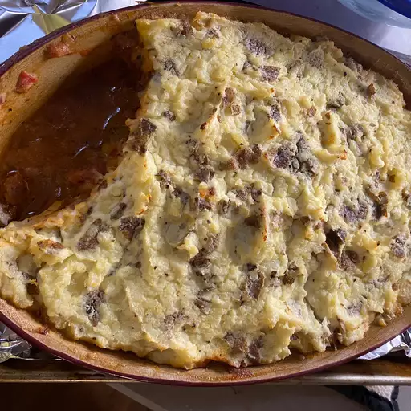

Shepard's Pie

Description
This classic shepherd's pie recipe starts by making a savory base of ground beef and vegetables in tangy tomato gravy. It's topped
with a layer of buttery mashed potatoes to make the perfect comfort food for your hungry family.
Ingredients
- 1 onion, chopped
- 2 cloves garlic, minced
- 1 teaspoon dried thyme
- 1 teaspoon dried rosemary
- 1 teaspoon salt
- 1 teaspoon pepper
- 1 pound lean ground beef
- 4 teaspoons all-purpose flour
- ¼ cup Heinz Tomato Ketchup
- ¾ cup Heinz® Tomato Juice
- 2 tablespoons Heinz Worcestershire Sauce
- 2 tablespoons Dijon mustard
- 1 cup frozen mixed vegetables (such as peas and carrots)
- 3 cups cooked, warm, mashed potatoes
- 2 tablespoons butter
- 1 clove garlic, minced
- ⅔ cup warm milk
Cooking Steps